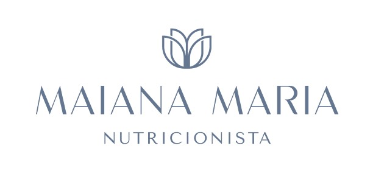

Oncologia
Atendimento nutricional especializado para pacientes oncológicos em diferentes fases do tratamento: quimioterapia, radioterapia, hormonioterapia, imunoterapia, período de remissão, pré ou pós-cirurgia.
Acompanhamento nutricional individualizado
Emagrecimento, hipertrofia, saúde gastrointestinal e equilíbrio metabólico com acompanhamento especializado. Com escuta, conhecimento científico e um plano feito para você, te ajudo a construir uma rotina mais saudável, leve e cheia de vitalidade.
Atendimento nutricional especializado para pacientes oncológicos em diferentes fases do tratamento: quimioterapia, radioterapia, hormonioterapia, imunoterapia, período de remissão, pré ou pós-cirurgia.
Abordagem nutricional para distúrbios gastrointestinais, incluindo inflamações intestinais, síndrome do intestino irritável, disbiose, alterações do trânsito intestinal, intolerâncias alimentares, SIBO e condições associadas.
Acompanhamento nutricional individualizado para ganho de massa muscular e redução de gordura corporal, com estratégias baseadas em ciência, objetivos e rotina de cada paciente.
Acompanhamento nutricional especializado para as diferentes fases da vida feminina, incluindo gestação, menopausa e estratégias nutricionais voltadas à melhora da saúde da pele, cabelos e unhas.
Se você está usando medicações para emagrecimento e enfrenta enjoos, náuseas, queda de cabelo, cansaço ou perda de massa muscular, a nutrição certa faz toda a diferença. Tenha um acompanhamento nutricional focado em reduzir os efeitos colaterais, proteger sua massa magra e potencializar seus resultados, para que você emagreça com mais qualidade de vida e segurança.

Sou nutricionista em Niterói, com atuação em emagrecimento, hipertrofia e nutrição clínica. Meu propósito é ajudar você a alcançar seus objetivos com um plano alimentar personalizado, baseado em evidências científicas e adaptado à sua rotina, sem dietas restritivas ou soluções temporárias.
Acredito que cuidar da saúde vai muito além da alimentação. Por isso, cada paciente recebe um acompanhamento individualizado, considerando sua rotina, preferências, histórico de saúde e metas, para conquistar resultados reais e sustentáveis.
Além da atuação clínica, sou professora universitária e palestrante, experiência que reforça meu compromisso com a atualização constante, a prática baseada em ciência e um atendimento ético, humanizado e acolhedor.
Se você procura uma nutricionista em Niterói para emagrecer com saúde, ganhar massa muscular ou desenvolver hábitos alimentares que realmente funcionem no dia a dia, será um prazer acompanhar a sua jornada. Atendo em consultório em Niterói e também realizo consultas online para pacientes de todo o Brasil.
Se você procura uma nutricionista em Niterói que ofereça um atendimento individualizado, baseado em evidências científicas e adaptado à sua rotina, meu acompanhamento foi desenvolvido para ajudar você a conquistar resultados consistentes e duradouros.
Cada consulta é planejada de forma personalizada, considerando seus objetivos, histórico de saúde, hábitos alimentares, exames laboratoriais, composição corporal e estilo de vida. O foco não está em dietas restritivas, mas na construção de estratégias nutricionais que sejam práticas, sustentáveis e possíveis de manter a longo prazo.
Meu atendimento é indicado para quem busca:
Durante a consulta realizo avaliação nutricional completa, análise criteriosa dos exames, definição de metas e elaboração de um plano alimentar totalmente personalizado para suas necessidades. Além do atendimento presencial em Niterói, também realizo consultas online para pacientes de outras localidades, oferecendo suporte contínuo para que você tenha segurança e acompanhamento durante toda a sua evolução.
Se você sente que é o momento de olhar para sua alimentação com mais atenção, cuidado e orientação profissional, estou aqui para te acompanhar. Cada consulta é pensada para entender sua história, suas necessidades e seus objetivos, com um plano nutricional realista, personalizado e baseado em ciência.
Dar o primeiro passo pode transformar sua relação com a alimentação e com o seu corpo. Agende sua consulta e comece hoje uma jornada mais consciente, equilibrada e saudável.